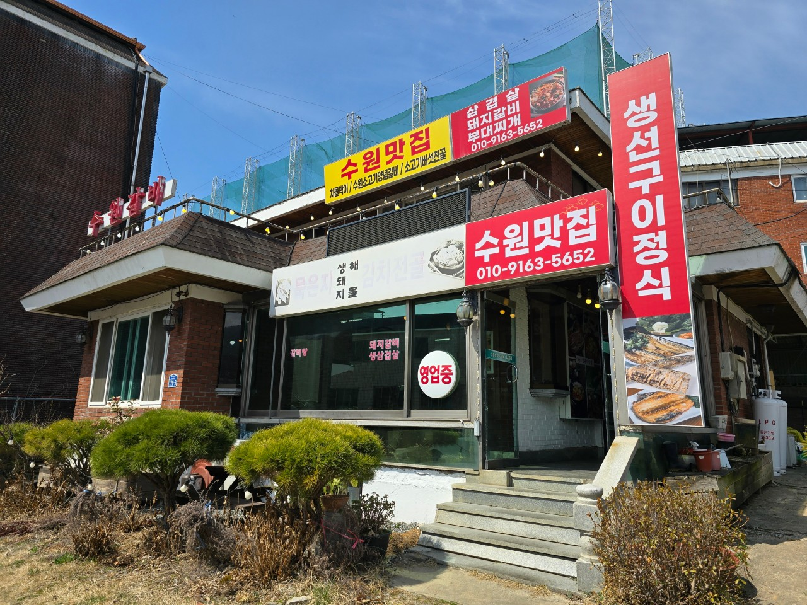
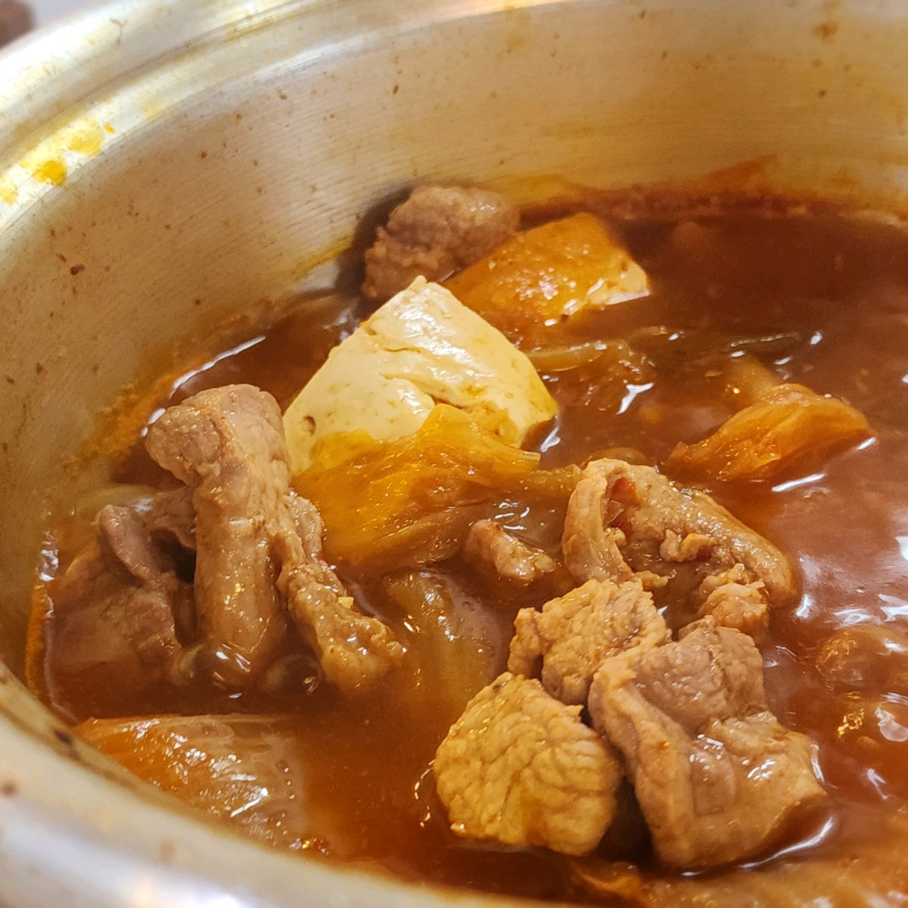
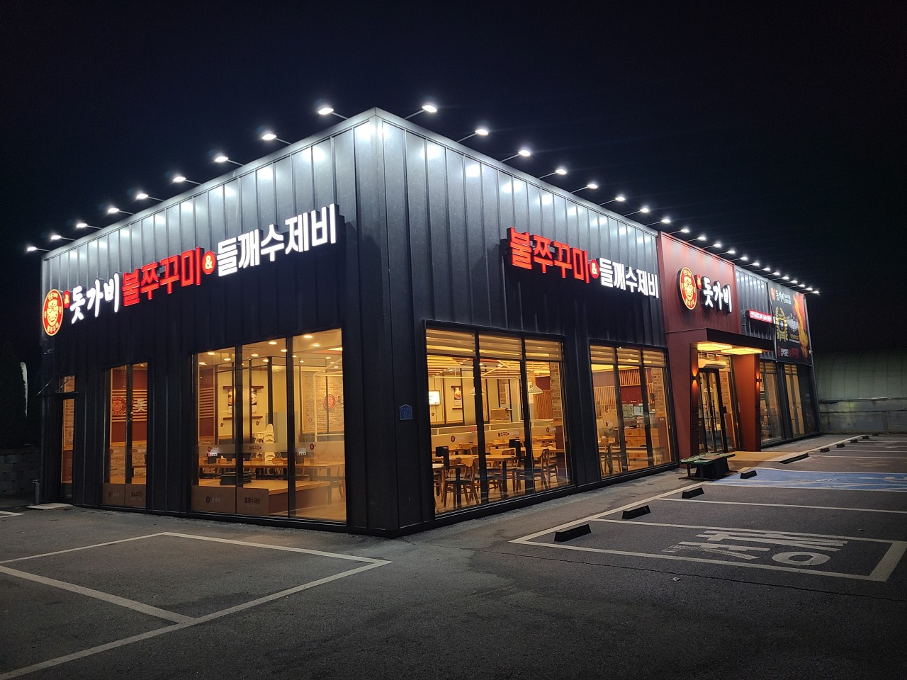
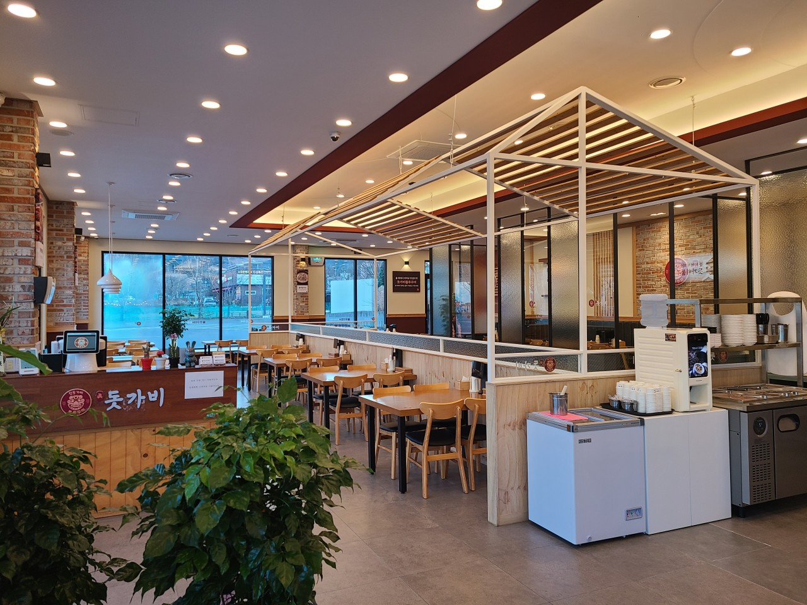

  ‹ › 1 / 2 장터식당 1.5km · 약 3분 김치찌개와 동태탕이 유명한 태조산공원 주변의 음식점입니다. 🍲 김치찌개 🐟 동태탕 ❄️ 겨울 한정 📍 충남 천안시 동남구 유량동 130-2 🗺️ 위치 확인
‹ › 1 / 2 이고집만두 700m · 약 1분 시원하고 담백한 국물의 만두전골과 튀김만두가 일품인 맛집입니다. 🥟 만두전골 🥟 튀김만두 ⏰ 웨이팅 주의 📍 충남 천안시 동남구 태조산길 258 💡 손님이 많은 편으로 웨이팅이 발생할 수 있어 일찍 방문하는 것을 추천합니다. 🗺️ 위치 확인
  ‹ › 1 / 2 진돗가비 불쭈꾸미 1.6km · 약 4분 불향 가득한 쭈꾸미와 고소한 들깨수제비의 조화가 좋은 음식점입니다. 🔥 불쭈꾸미 🥣 들깨수제비 📍 충남 천안시 동남구 태조산길 142-4 💡 쾌적한 매장 환경에서 깔끔하게 식사하기 좋은 곳입니다. 🗺️ 위치 확인